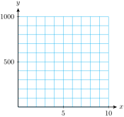
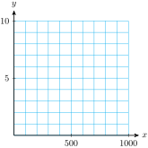
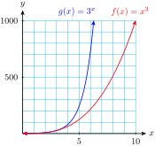
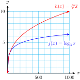
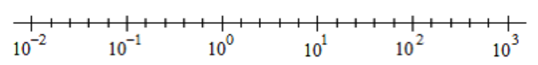
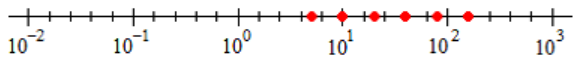
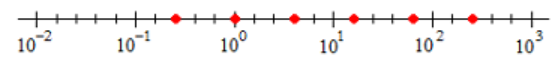
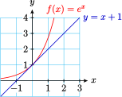
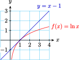

Section A.10 Chapter 10 Logarithmic Functions
Subsection A.10.1 Logarithmic Functions
Subsubsection A.10.1.1 Graph log functions
One way to graph a log function is to first make a table of values for its inverse function, the exponential function with the same base, then interchange the variables.
-
Complete the table of values and graph on the same grid: \(~f(x)=x^3~\) and \(~g(x)=3^x~\)
\(~~~x~~~\) \(~~~0~~~\) \(~~~1~~~\) \(~~~2~~~\) \(~~~3~~~\) \(~~~4~~~\) \(~~~5~~~\) \(~~~6~~~\) \(~~~8~~~\) \(~~10~~~\) \(~f(x)~\) \(\) \(\) \(\) \(\) \(\) \(\) \(\) \(\) \(\) \(~g(x)~\) \(\) \(\) \(\) \(\) \(\) \(\) \(\) \(\) \(\)  -
Use your tables from part (a) to graph \(~h(x)=\sqrt[3]{x}~\) and \(~j(x)=\log_3 {(x)}~\) on the same grid.
Answer.
- 
- 
Subsubsection A.10.1.2 Use function notation
A log function is the inverse of the exponential function with the same base, and vice versa.
Example A.10.2.
For each function \(~f(x)~\text{,}\) decide whether \(f(a+b)=f(a)+f(b)\text{.}\)
- \(\displaystyle f(x)=3^x\)
- \(\displaystyle f(x)=\log_3 {(x)}\)
Solution.
-
\(f(a+b)=3^{a+b},~\) and \(~f(a)+f(b) = 3^a+3^b.~\)But \(~3^{a+b}~\) is not equivalent to \(~3^a+3^b;~\) in fact \(~3^{a+b} =3^a \cdot 3^b.\)So for this function, \(f(a+b) \not= f(a)+f(b)\text{.}\)
-
\(f(a+b)=\log_3 {(a+b)},~\) and \(~f(a)+f(b) = \log_3 {(a)} +\log_3 {(b)}.~\)But \(~\log_3 {(a+b)}~\) is not equivalent to \(~\log_3 {(a)} +\log_3 {9};~\) in fact \(~\log_3 {(ab)} = \log_3 {(a)} +\log_3 {(b)}.\)So for this function, \(f(a+b) \not= f(a)+f(b)\text{.}\)
Checkpoint A.10.3.
\(g(x)=5^x~\text{.}\) Evaluate and simplify if possible.
- \(\displaystyle g(3+t)\)
- \(\displaystyle g(3t)\)
Answer.
- \(\displaystyle 125 \cdot 5^{t}\)
- \(\displaystyle 125^t\)
Example A.10.4.
\(q(x)=9^x~\) and \(p(x)\) is its inverse function. Evaluate if possible.
- \(\displaystyle q\left(\dfrac{1}{2}\right)\)
- \(\displaystyle p(3)\)
- \(\displaystyle q(0)\)
- \(\displaystyle p(0)\)
Solution.
- \(\displaystyle 3\)
- \(\displaystyle \dfrac{1}{2}\)
- \(\displaystyle 1\)
- undefined
Checkpoint A.10.5.
\(h(x)=\log_4 {(x)}.~\) Evaluate if possible.
- \(\displaystyle h(4)\)
- \(g(4)\text{,}\) where \(g\) is the inverse function for \(h\)
- \(\displaystyle h(0)\)
- \(\displaystyle g(0)\)
Answer.
- \(\displaystyle 1\)
- \(\displaystyle 256\)
- undefined
- \(\displaystyle 1\)
Checkpoint A.10.6.
\(f(x)=\log_8 {(x)}~\text{.}\) Evaluate and simplify if possible.
- \(\displaystyle f(64p)\)
- \(\displaystyle f(64+p)\)
Answer.
- \(\displaystyle 2+\log_8 {(p)}\)
- cannot be simplified
Subsubsection A.10.1.3 Use the properties of logarithms
The three properties of logarithms are helpful in making computations involving logs.
Properties of Logarithms.
If \(x\text{,}\) \(y\text{,}\) \(b \gt 0\text{,}\) and \(b\ne 1\text{,}\) then
- \(\displaystyle \log_{b}{(xy)} = \log_{b}{(x)} + \log_{b}{(y)}\)
- \(\displaystyle \log_{b}\left(\dfrac{x}{y}\right) = \log_b {(x)} - \log_b {(y)}\)
- \(\displaystyle \log_b {(x^k)} = k \log_b {(x)} \)
Example A.10.7.
If \(\log_b {(10)} = 2.303\) and \(\log_b {(2)} = 0.693\text{,}\) what is \(\log_b {(5)}\text{?}\)
Solution.
Because \(5 = \dfrac{10}{2}\text{,}\)
\begin{equation*}
\log_b {(5)} = \log_b \left(\dfrac{10}{2}\right) = \log_b {(10)} - \log_b {(2)} = 2.303 - 0.693 = 1.61
\end{equation*}
Example A.10.8.
If \(\log_b {(10)} = 2.303\) and \(\log_b {(2)} = 0.693\text{,}\) what is \(\log_b {(20)}\text{?}\)
Solution.
Because \(20 = 10 \cdot 2\text{,}\)
\begin{equation*}
\log_b {(20)} = \log_b {(10 \cdot 2)} = \log_b {(10)} + \log_b {(2)} = 2.303 + 0.693 = 2.996
\end{equation*}
Checkpoint A.10.9.
Take the log of each number. What do you notice?
- \(\displaystyle 8 \cdot 100 = 800\)
- \(\displaystyle 12 \cdot 1000 = 12,000\)
- \(\displaystyle 20 \cdot 25 = 500\)
- \(\displaystyle 200 \cdot 250 = 50,000\)
Answer.
- \(\displaystyle \log {(8)} + \log {(10)} = \log {(800)}\)
- \(\displaystyle \log {(12)} + \log {(100)} = \log {(12,000)}\)
- \(\displaystyle \log {(20)} + \log {(25)} = \log {(500)}\)
- \(\displaystyle \log {(200)} + \log {(250)} = \log {(50,000)}\)
Checkpoint A.10.10.
Compare the two operations. What do you notice?
- (i) Compute \(10^{2.68}~~~~~~~~~~~~~~~~~\) (ii) Solve for \(x:~~\log {(x)} = 2.68\)
- (i) Compute \(10^{-0.75}~~~~~~~~~~~~~~~~\) (ii) Solve for \(x:~~\log {(x)} = -0.75\)
Answer.
- (i) and (ii) have the same answer: \(478.63\)
- (i) and (ii) have the same answer: \(0.1778\)
Checkpoint A.10.11.
- The ratio of \(N\) to \(P\) is \(32.6\text{.}\) Compute \(\log {(N)} - \log {(P)}\text{.}\)
- \(\log {(z)} - \log {(t)} = 2.5\text{.}\) Compute \(\dfrac{z}{t}\text{.}\)
Answer.
- \(\displaystyle 1.5132\)
- \(\displaystyle 316.2278\)
Subsection A.10.2 Logarithmic Scales
Subsubsection A.10.2.1 Plot a log scale
Because \(\log {(x)}\) grows very slowly, we can use logs to compare quantities that vary greatly in magnitude.
Example A.10.12.
-
Complete the table. Round the values to one decimal place.
\(x\) \(~1~\) \(~5~\) \(25\) \(125\) \(625\) \(\log {(x)}\) \(\) \(\) \(\) \(\) \(\) -
Plot the values of \(x\) on a log scale.
- Each time we multiply \(x\) by 5, how much does the logarithm increase? What is \(\log {(5)}\text{,}\) to one decimal place?
Solution.
\(x\) \(~1~\) \(~5~\) \(25\) \(125\) \(625\) \(\log x\) \(0\) \(0.7\) \(1.4\) \(2.1\) \(2.8\) 
- Each time we multiply \(x\) by 5, the log of \(x\) increases by 0.7, because \(\log {(5)} = 0.7\text{.}\) This is an application of the log properties:\begin{equation*} \log {(5x)} = \log {(x)} + \log {(5)} = \log {(x)} + 0.7 \end{equation*}
Checkpoint A.10.13.
-
Complete the table. Round the values to one decimal place.
\(x\) \(~5~\) \(~10~\) \(~20~\) \(~40~\) \(~80~\) \(\log {(x)}\) \(\) \(\) \(\) \(\) \(\) -
Plot the values of \(x\) on a log scale.
- Each time we multiply \(x\) by 2, how much does the logarithm increase? What is \(\log {(2)}\text{,}\) to one decimal place?
Answer.
\(x\) \(~5~\) \(~10~\) \(~20~\) \(~40~\) \(~80~\) \(\log {(x)}\) \(0.7\) \(1\) \(1.3\) \(1.6\) \(1.9\) - 
- \(\displaystyle 0.3;~0.3\)
Checkpoint A.10.14.
-
Complete the table. Round the values to one decimal place.
\(x\) \(0.25\) \(~1~\) \(~4~\) \(~16~\) \(~64~\) \(256\) \(\log {(x)}\) \(\) \(\) \(\) \(\) \(\) \(\) -
Plot the values of \(x\) on a log scale.
- Each time we multiply \(x\) by 4, how much does the logarithm increase? What is \(\log {(4)}\text{,}\) to one decimal place?
Answer.
\(x\) \(0.25\) \(~1~\) \(~4~\) \(~16~\) \(~64~\) \(256\) \(\log {(x)}\) \(-0.6\) \(0\) \(0.6\) \(1.2\) \(1.8\) \(2.4\) - 
- \(\displaystyle 0.6;~0.6\)
Subsubsection A.10.2.2 Compare quantities
There is often more than one way to express a comparison with mathematical notation.
Example A.10.15.
When we say that "\(A\) is 3 times larger than \(B\text{,}\)" we mean that \(A=3B\text{.}\)
Example A.10.16.
When we say that "\(A\) is 3 more than \(B\text{,}\)" we mean that \(A=B+3\text{.}\)
Use these equations for the following Checkpoints.
- \(\displaystyle x=5H\)
- \(\displaystyle x=\dfrac{5}{H}\)
- \(\displaystyle x=5+H\)
- \(\displaystyle H=x+5\)
- \(\displaystyle H=5x\)
- \(\displaystyle H=\dfrac{5}{x}\)
- \(\displaystyle x-H=5\)
- \(\displaystyle H-x=5\)
- \(\displaystyle \dfrac{x}{H}=5\)
- \(\displaystyle \dfrac{H}{x}=5\)
- \(\displaystyle \dfrac{\log x}{\log H} = 5\)
- \(\displaystyle \log x - \log H =\log 5\)
- \(\displaystyle \log x + \log 5 = \log H\)
Checkpoint A.10.17.
From the list above, match all the correct algebraic expressions to the phrase "\(x\) is 5 times as large as \(H\text{.}\)"
Answer.
(a), (i), (l)
Checkpoint A.10.18.
From the list above, match all the correct algebraic expressions to the phrase "\(x\) is 5 more than \(H\text{.}\)"
Answer.
(c), (g)
Subsection A.10.3 The Natural Base
Subsubsection A.10.3.1 Graphs of \(y=e^x\) and \(y=\ln {(x)}\)
The graphs of the natural exponential function and the natural log function have some special properties.
Checkpoint A.10.19.
Use technology to graph \(~f(x)=e^x~\) and \(~y=x+1~\) in a window with \(~-2 \le {(x)} \le 3~\) and \(~-1 \le y \le 4~\text{.}\) What do you notice about the two graphs?
Answer.

The line is tangent to the graph at \((0,1)\text{.}\)
Checkpoint A.10.20.
Use technology to graph \(~f(x)=\ln x~\) and \(~y=x-1~\) in a window with \(~-1 \le {(x)} \le 4~\) and \(~-2 \le y \le 3~\text{.}\) What do you notice about the two graphs?
Answer.

The line is tangent to the graph at \((1,0)\text{.}\)
Subsubsection A.10.3.2 Using growth and decay laws with base \(e\)
We can write exponential growth and decay laws using base \(e\text{.}\)
Exponential Growth and Decay.
The function
\begin{equation*}
P(t) = P_0 e^{kt}
\end{equation*}
describes exponential growth if \(k \gt 0\text{,}\) and exponential decay if \(k \lt 0\text{.}\)
Example A.10.21.
A colony of bees grows at a rate of 8% annually. Write its growth law using base \(e\text{.}\)
Solution.
The growth factor is \(~b = 1+r = 1.08~\text{,}\) so the growth law can be written as
\begin{equation*}
P(t) = P_0 (1.08)^t
\end{equation*}
Using base \(e\text{,}\) we write \(~P(t) = P_0 e^{kt},~\) where \(e^k = 1.08.\) (You can see this by evaluating each growth law at \(t=1\text{.}\)) So we solve for \(k\text{.}\)
\begin{align*}
e^k \amp = 1.08 \amp \amp \blert{\text{Take the natural log of both sides.}}\\
\ln (e^k) \amp = \ln (1.08) \amp \amp \blert{\text{Simplify both sides.}}\\
k \amp = 0.0770
\end{align*}
The growth law is \(~P(t) = P_0 e^{0.077t}\text{.}\)
Example A.10.22.
A radioactive isotope decays according to the formula \(~N(t)=N_0 e^{-0.016t},~\) where \(t\) is in hours. Find its percent rate of decay.
Solution.
First we write the decay law in the form \(~N(t)=N_0 b^t,~\) where \(~b=e^k.~\)
In this case, \(~k=-0.016,~\) so \(~b=e^{-0.016} = 0.9841.~\) Now, \(~b=1-r,~\) and solving for \(r\) we find \(~r=-0.0159.~\) The rate of decay is approximately 16% per hour.
Checkpoint A.10.23.
A virus spreads in the population at a rate of 19.5% daily. Write its growth law using base \(e\text{.}\)
Answer.
\(P(t) = P_0 e^{0.178t}\)
Checkpoint A.10.24.
Sea ice is decreasing at a rate of 12.85% per decade. Write its decay law using base \(e\text{.}\)
Answer.
\(Q(t) = Q_0 e^{-0.1375t}\)
Checkpoint A.10.25.
In 2020, the world population was growing according to the formula \(~P(t)=P_0 e^{0.0488t},~\) where \(t\) is in years. Find its percent rate of growth.
Answer.
5%
Checkpoint A.10.26.
Since 1984, the population of cod has decreased annually according to the formula \(~N(t)=N_0 e^{-0.1863t}.~\) Find its percent rate of decay.
Answer.
17%